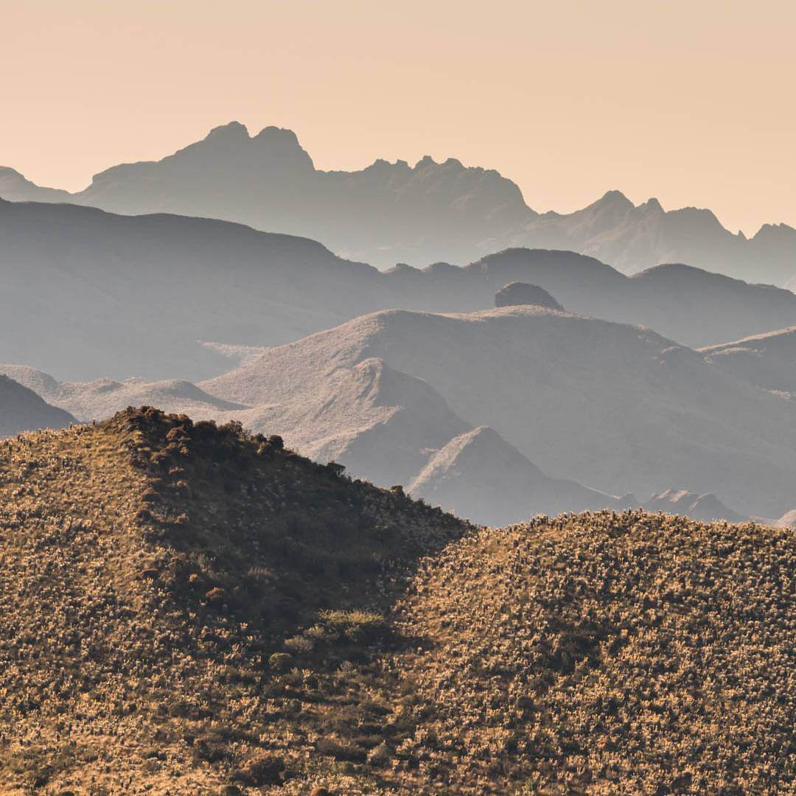
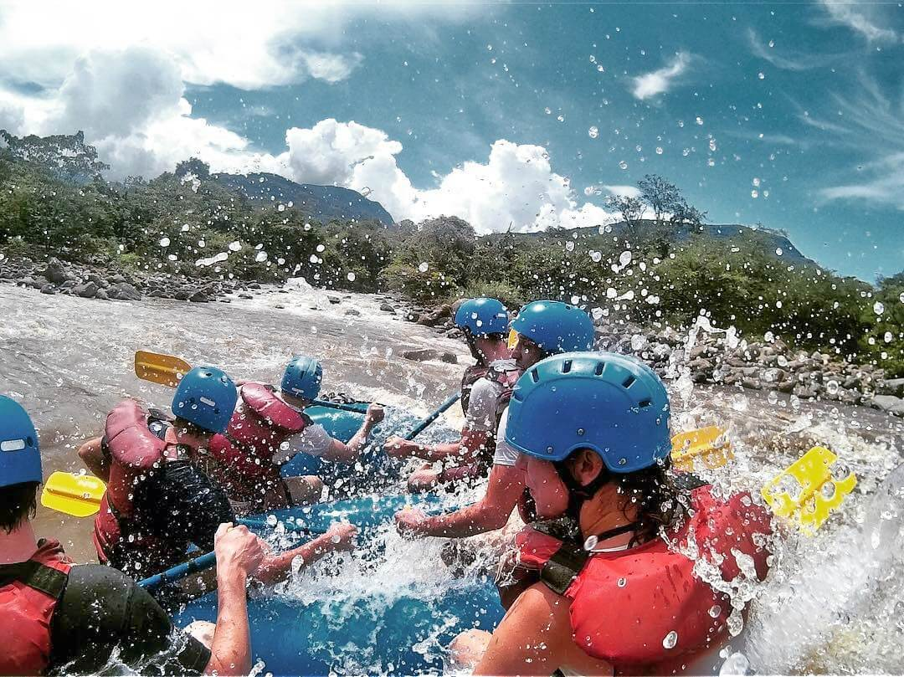
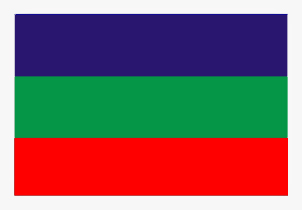

Temperatura promedio: 0°C – 20°C
Altura: 600 – 5330 msnm
El Parque Nacional Natural Güicán, Cocuy y Chita es uno de los 59 parques nacionales naturales de Colombia.
Está ubicado al centro-oriente del país, en el límite entre los departamentos de Boyacá y Arauca;
El Parque Nacional Natural de Güicán, El Cocuy y Chita es territorio sagrado para los indígenas U‘wa.
Un hermoso lugar sobre la Cordillera Oriental, que alberga la mayor masa glaciar de Colombia, conformada
por más de 25 picos cubiertos de hielo y nieve, y más de 150 lagunas distribuidas entre sus dos cadenas montañosas.
Este es uno de los pocos lugares turísticos de Colombia, donde podrás superar los 5.000 metros de altura, entrar en contacto con la gran belleza natural de los Andes y la variedad de valles paramunos, espejos de agua y aves como el gallito de roca y el periquito aliamarillo.
Qué hacer | Trekking en los 3 senderos habilitados.
| INFORMACIÓN | ARTESANÍAS | |||||||
|---|---|---|---|---|---|---|---|---|
| FOTOGRAFÍA | GASTRONOMÍA | DATOS: | ||||||
|  | MUTE: Es una sopa típica del Norte de Santander CHICHA: Diversas variedades de bebidas derivadas de la fermentación no destilada del maíz PEPITORIA: Platillo que tiene como principal ingrediente sangre y vísceras de cabrito. La pepitoria es un plato muy común en el departamento de Santander. AREPA SANTANDEREANA: Sumamente consumida en Santander, se prepara en base a maíz amarillo | Mano de obra de los artesanos es de reconocida calidad e ingenio entre las que se destacan trabajos especializados y con originalidad. Los productos artesanales son de gran demanda nacional e internacional, los más características son: ° Figuras en capachos de mazorca de maíz, arreglos y flores fabricadas principalmente en Páramo y Aratoca. ° Artesanías para tapices, cuadros en plano y en collages, y varias piezas utilitarias producidas especialmente en telares de Curití. ° Otros como esculturas, fuentes de agua, utensilios útiles para el área doméstica sobre la base de piedra de la región, se realizan en Barichara; también elaboran sandalias, bolsos, gorros, sombreros y artículos originados de productos naturales. |
| | ||||
|
| | 
| ||||||